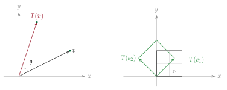
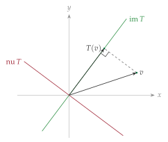
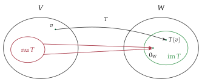

Para arrancarRotar una foto, escalarla o reflejarla en el celular son transformaciones lineales. El núcleo te dice qué se «aplasta» a cero y la imagen qué puedes alcanzar.
Hasta ahora hemos estudiado los espacios vectoriales «por dentro»: sus subespacios, sus bases, sus dimensiones. Este capítulo se ocupa de las funciones que comunican un espacio vectorial con otro. No nos interesan todas las funciones, sino las que respetan las dos operaciones que definen un espacio vectorial, la suma y el producto por escalares: las transformaciones lineales. Son los objetos naturales del álgebra lineal, porque un fenómeno modelado por una función lineal se comprende completamente a partir de lo que ocurre sobre una base, y porque, como veremos, en Rn todas ellas son multiplicación por una matriz.
El plan es el siguiente. Primero definimos las transformaciones lineales, aprendemos a reconocerlas (y a descartar las que no lo son) y demostramos que quedan determinadas por su acción sobre una base. Después estudiamos las que provienen de matrices y las interpretamos geométricamente: rotaciones, reflexiones, proyecciones y dilataciones. Luego mostramos ejemplos en espacios de polinomios, de funciones y de matrices. Por último asociamos a cada transformación dos subespacios, su núcleo y su imagen, y demostramos el resultado que los relaciona: la suma de sus dimensiones es la dimensión del espacio de partida.
Una funciónf de un conjunto D en un conjunto E es una correspondencia que asigna a cada elemento x de D exactamente un elemento y de E. Se escribe f:D→E. El conjunto D es el dominio y E es el codominio. El elemento y=f(x) se llama la imagen de x bajo f, y el conjunto de todos los x∈D tales que f(x)=y es la preimagen de y.
El rango de f es el conjunto de todas las imágenes, {f(x)∣x∈D}⊆E. Nota que un elemento de E puede tener muchas preimágenes, una sola o ninguna; lo que la definición exige es que cada elemento de D tenga una imagen.
Sea f:R→R dada por f(x)=x2. Calcula f(−6), f(3), f(a+b) y f(a)+f(b), y halla el rango de f.
Soluciónintenta primero
Basta sustituir: f(−6)=(−6)2=36 y f(3)=(3)2=3. Además f(a+b)=(a+b)2=a2+2ab+b2,f(a)+f(b)=a2+b2. Las dos últimas expresiones no coinciden salvo que ab=0: la función f no «respeta» la suma. Este detalle, que aquí es solo una observación, será decisivo en la sección siguiente. Por último, como todo cuadrado real es no negativo y todo y≥0 es el cuadrado de y, el rango de f es [0,∞).
De ahora en adelante consideraremos funciones T:V→W donde V y W son espacios vectoriales. Llamaremos a estas funciones transformaciones y las denotaremos con letras mayúsculas; escribiremos indistintamente T(v) o Tv.
Ejemplo 8.3· Imagen y preimagen bajo una transformación
Sea T:R2→R2 definida por T(v1,v2)=(v1−v2,v1+2v2).
Halla la imagen de v=(1,2).
Halla la preimagen de w=(−1,11).
Soluciónintenta primero
a) Se sustituye v1=1, v2=2: T(1,2)=(1−2,1+2⋅2)=(−1,5). b) Buscamos los v=(v1,v2) con T(v)=(−1,11), es decir, con (v1−v2,v1+2v2)=(−1,11). Esto es el sistema {v1−v2=−1v1+2v2=11. De la primera ecuación, v1=v2−1. Sustituyendo en la segunda, (v2−1)+2v2=11, o sea 3v2=12 y v2=4; entonces v1=3. La preimagen de w es el conjunto {(3,4)}, con un único elemento. Comprobación: T(3,4)=(3−4,3+8)=(−1,11).
Sean V y W espacios vectoriales. Una función T:V→W es una transformación lineal si para todos los vectores u,v∈V y todo escalar c se cumplen
T(u+v)=T(u)+T(v) (aditividad),
T(cu)=cT(u) (homogeneidad).
Conviene leer las dos igualdades con cuidado, porque en cada una aparecen dos operaciones distintas. En T(u+v)=T(u)+T(v), la suma de la izquierda es la de V (se suman u y v antes de aplicar T), y la de la derecha es la de W (se suman las imágenes). En T(cu)=cT(u) ocurre lo mismo con el producto por escalar: a la izquierda es el de V y a la derecha el de W. Dicho en una frase, aplicar T y operar conmutan: da igual operar primero y transformar después, o transformar primero y operar después.
Una función T:V→W es lineal si y solo si T(au+bv)=aT(u)+bT(v) para todos u,v∈V y todos los escalares a,b. En efecto, si T es lineal, T(au+bv)=T(au)+T(bv)=aT(u)+bT(v) por a) y luego b). Recíprocamente, con a=b=1 se obtiene a), y con b=0 se obtiene T(au)=aT(u)+0⋅T(v)=aT(u), es decir, b).
Muestra que T:R2→R2 definida por T(v1,v2)=(v1−v2,v1+2v2) es una transformación lineal.
Estrategia.
Se toman vectores y escalares arbitrarios, se calcula cada lado de la igualdad con la fórmula de T y se comprueba que ambos resultados coinciden.
Soluciónintenta primero
Aditividad. Sean u=(u1,u2) y v=(v1,v2) en R2. Como u+v=(u1+v1,u2+v2), T(u+v)=((u1+v1)−(u2+v2),(u1+v1)+2(u2+v2))=(u1−u2+v1−v2,u1+2u2+v1+2v2). Por otro lado, T(u)+T(v)=(u1−u2,u1+2u2)+(v1−v2,v1+2v2)=(u1−u2+v1−v2,u1+2u2+v1+2v2). Ambas expresiones son iguales, luego T(u+v)=T(u)+T(v).
Homogeneidad. Sean c∈R y v=(v1,v2). Entonces T(cv)=T(cv1,cv2)=(cv1−cv2,cv1+2cv2), mientras que cT(v)=c(v1−v2,v1+2v2)=(c(v1−v2),c(v1+2v2))=(cv1−cv2,cv1+2cv2). Así T(cv)=cT(v). Cumpliéndose las dos propiedades, T es una transformación lineal.
Funciones que no son lineales
Para probar que una función no es lineal basta exhibir un caso concreto en que una de las dos propiedades falla: un contraejemplo. Es la manera más limpia de hacerlo, y la que usamos a continuación.
Muestra que ninguna de las funciones f,g,h:R→R dadas por f(x)=2x+1, g(x)=x2 y h(x)=senx es una transformación lineal.
Soluciónintenta primero
a) f(x)=2x+1. Falla la aditividad. Con x=1 y y=2: f(1+2)=f(3)=2⋅3+1=7,f(1)+f(2)=(2⋅1+1)+(2⋅2+1)=3+5=8. Como 7=8, f(x+y)=f(x)+f(y). También falla la homogeneidad: con c=2 y x=3, f(2⋅3)=f(6)=13 pero 2f(3)=14. Hay además una forma inmediata de detectarlo, que veremos en el teorema 8.9: toda transformación lineal envía el cero al cero, y aquí f(0)=1=0. (La gráfica de f es una recta, pero no pasa por el origen; en cálculo se la llama «lineal», en álgebra lineal se la llama afín.)
b) g(x)=x2. Falla la aditividad: g(1+2)=g(3)=9, pero g(1)+g(2)=1+4=5. Falla también la homogeneidad: con c=2, x=3, g(2⋅3)=g(6)=36 mientras que 2g(3)=2⋅9=18. Aquí g(0)=0, de modo que la prueba del cero no basta para descartarla; otra forma de verlo es que g(−1)=1=−g(1)=−1.
c) h(x)=senx. Falla la aditividad: h(2π+2π)=senπ=0, mientras que h(2π)+h(2π)=1+1=2. Falla también la homogeneidad: con c=2 y x=2π, h(2⋅2π)=senπ=0 pero 2h(2π)=2. Otro contraejemplo: h(6π+6π)=sen3π=23≈0,866=1=21+21. De nuevo h(0)=0 y el criterio del cero no la descarta.
Las funciones g y h ilustran algo importante: que T(0)=0 no basta para que T sea lineal. Es una condición necesaria, no suficiente.
Definición 8.7· Transformación cero y transformación identidad
Sean V y W espacios vectoriales.
La transformación cero es T:V→W definida por T(v)=0W para todo v∈V.
La transformación identidad es I:V→V definida por I(v)=v para todo v∈V.
Proposición 8.8· La transformación cero y la identidad son lineales
La transformación cero T:V→W y la transformación identidad I:V→V son transformaciones lineales.
Demostraciónmostrar
Para la transformación cero, sean u,v∈V y c un escalar. Entonces T(u+v)=0W=0W+0W=T(u)+T(v) y T(cu)=0W=c0W=cT(u), porque el producto de cualquier escalar por el vector cero es el vector cero.
Para la identidad, I(u+v)=u+v=I(u)+I(v) y I(cu)=cu=cI(u), sin más que aplicar la definición.
Consecuencias inmediatas de la definición
Teorema 8.9· Propiedades de las transformaciones lineales
Sea T:V→W una transformación lineal y sean u,v∈V. Entonces
T(0V)=0W;
T(−v)=−T(v);
T(u−v)=T(u)−T(v);
si v=c1v1+c2v2+⋯+cnvn, entonces T(v)=c1T(v1)+c2T(v2)+⋯+cnT(vn).
Demostraciónmostrar
a) Como 0⋅0V=0V (el escalar cero por cualquier vector da el vector cero), la homogeneidad permite escribir T(0V)=T(0⋅0V)=0⋅T(0V)=0W. b) Como −v=(−1)v, T(−v)=T((−1)v)=(−1)T(v)=−T(v), por la homogeneidad.
c) Escribimos u−v=u+(−v) y usamos la aditividad y el inciso anterior: T(u−v)=T(u+(−v))=T(u)+T(−v)=T(u)−T(v). d) Por inducción sobre n. Para n=1, T(c1v1)=c1T(v1) es la homogeneidad. Supongamos el resultado cierto para n−1 sumandos. Entonces, por la aditividad, la hipótesis de inducción y la homogeneidad, T(c1v1+⋯+cn−1vn−1+cnvn)=T(c1v1+⋯+cn−1vn−1)+T(cnvn)=c1T(v1)+⋯+cn−1T(vn−1)+cnT(vn).
El inciso a) es una prueba rápida de no linealidad: si T(0V)=0W, entonces T no es lineal. El inciso d) dice que una transformación lineal transforma combinaciones lineales en combinaciones lineales con los mismos coeficientes. Es la propiedad que explota el resultado siguiente.
Ejemplo 8.10· Cálculo de T(v) a partir de los valores en la base canónica
Sea T:R3→R3 una transformación lineal tal que T(1,0,0)=(2,−1,4),T(0,1,0)=(1,5,−2),T(0,0,1)=(0,3,1). Calcula T(2,3,−2).
Soluciónintenta primero
Escribimos el vector como combinación lineal de la base canónica: (2,3,−2)=2(1,0,0)+3(0,1,0)−2(0,0,1). Por el inciso d) del teorema 8.9, T(2,3,−2)=2T(1,0,0)+3T(0,1,0)−2T(0,0,1)=2(2,−1,4)+3(1,5,−2)−2(0,3,1)=(4,−2,8)+(3,15,−6)+(0,−6,−2)=(7,7,0). En general, para (x,y,z) arbitrario resulta T(x,y,z)=x(2,−1,4)+y(1,5,−2)+z(0,3,1)=(2x+y,−x+5y+3z,4x−2y+z); con (x,y,z)=(2,3,−2) se recupera (7,7,0).
Una transformación lineal está determinada por su acción sobre una base
El ejemplo anterior sugiere que, conocidos los valores de T en una base, T queda completamente conocida. Es cierto, y es quizá el resultado estructural más importante de la teoría. Además, se puede dar cualquier valor a los vectores de la base.
Teorema 8.11· Una transformación lineal queda determinada por su acción sobre una base
Sea V un espacio vectorial con base B={v1,…,vn} y sean w1,…,wn vectores cualesquiera de un espacio vectorial W. Entonces existe una única transformación lineal T:V→W tal que T(vi)=wi para i=1,…,n. Explícitamente, si v=c1v1+⋯+cnvn, entonces T(v)=c1w1+⋯+cnwn.
Demostraciónmostrar
Unicidad. Sea S:V→W una transformación lineal con S(vi)=wi para todo i. Todo v∈V se escribe como v=c1v1+⋯+cnvn, y por el teorema 8.9 d), S(v)=c1S(v1)+⋯+cnS(vn)=c1w1+⋯+cnwn. Así el valor de S(v) está forzado, luego dos transformaciones lineales que coincidan sobre B coinciden en todo V.
Existencia. Como B es base, cada v∈V se escribe de una única manera como v=c1v1+⋯+cnvn. Por esa unicidad la fórmula T(v)=c1w1+⋯+cnwn define, sin ambigüedad, una función T:V→W. Se cumple T(vi)=wi, pues vi=0v1+⋯+1vi+⋯+0vn. Falta ver que T es lineal. Sean u=a1v1+⋯+anvn y v=b1v1+⋯+bnvn y sea c un escalar. Entonces u+v=(a1+b1)v1+⋯+(an+bn)vn y cu=(ca1)v1+⋯+(can)vn, con lo cual, por definición de T, T(u+v)T(cu)=i=1∑n(ai+bi)wi=i=1∑naiwi+i=1∑nbiwi=T(u)+T(v),=i=1∑n(cai)wi=ci=1∑naiwi=cT(u).
En la práctica el teorema dice dos cosas. Para calcular: conocidas las imágenes de una base, se halla T(v) para cualquier v expresándolo en la base. Para construir: basta elegir a voluntad las imágenes de los vectores de una base para obtener una transformación lineal, sin ninguna condición de compatibilidad. Esto último se usará para definir las transformaciones geométricas de la sección siguiente.
Sea T:R2→R2 la transformación lineal con T(1,1)=(2,3) y T(1,−1)=(0,1). Halla T(x,y) y calcula T(4,−2).
Soluciónintenta primero
Los vectores (1,1) y (1,−1) son linealmente independientes (ninguno es múltiplo del otro), de modo que forman una base de R2 y el teorema 8.11 asegura que T existe y es única. Escribimos un vector arbitrario en esa base: (x,y)=a(1,1)+b(1,−1) equivale al sistema a+b=x, a−b=y, cuya solución es a=2x+y,b=2x−y. Por el teorema 8.9 d), T(x,y)=2x+y(2,3)+2x−y(0,1)=(x+y,23x+3y+x−y)=(x+y,2x+y). Comprobación: T(1,1)=(2,3) y T(1,−1)=(0,1). Finalmente T(4,−2)=(4−2,8−2)=(2,6).
Ejemplo 8.13· Una transformación lineal en polinomios
Sea T:P2→R2 la transformación lineal con T(1)=(1,0), T(x)=(0,1) y T(x2)=(1,1). Calcula T(2−3x+5x2).
Soluciónintenta primero
El conjunto {1,x,x2} es la base canónica de P2. Por linealidad, T(2−3x+5x2)=2T(1)−3T(x)+5T(x2)=2(1,0)−3(0,1)+5(1,1)=(2+5,−3+5)=(7,2). En general, T(a+bx+cx2)=(a+c,b+c).
InteractivoUna transformación lineal del plano
Arrastra Ae₁ y Ae₂ (las columnas de A) o escoge un ejemplo; anima de I a A.
8.3 Transformaciones lineales definidas por matrices
El ejemplo más importante de transformación lineal es también el más sencillo de escribir: multiplicar por una matriz.
Ejemplo 8.14· Una transformación dada por una matriz
Considera T:R2→R3 definida por T(v)=Av, con A=32−101−2. Calcula T(2,−1) y muestra que T es lineal.
Soluciónintenta primero
Los vectores de R2 se escriben como columnas para poder multiplicar: T(2,−1)=32−101−2(2−1)=3⋅2+0⋅(−1)2⋅2+1⋅(−1)(−1)⋅2+(−2)(−1)=630. Para la linealidad, sean v,w∈R2 y c∈R. Por la propiedad distributiva del producto de matrices, T(v+w)=A(v+w)=Av+Aw=T(v)+T(w), y por la compatibilidad con el producto por escalar, T(cv)=A(cv)=c(Av)=cT(v). Así T es lineal. El argumento no usó los números de A, y eso lo convierte en un teorema general.
Teorema 8.15· La multiplicación por una matriz es lineal
Sea A una matriz m×n. La función T:Rn→Rm definida por T(x)=Ax es una transformación lineal.
Demostraciónmostrar
Sean x,y∈Rn y c∈R. Las propiedades del producto de matrices dan A(x+y)=Ax+Ay y A(cx)=c(Ax); es decir, T(x+y)=T(x)+T(y) y T(cx)=cT(x).
Explícitamente, si x=(x1,…,xn), la i-ésima coordenada de Ax es ai1x1+ai2x2+⋯+ainxn: cada coordenada de la imagen es una combinación lineal de las coordenadas de x, sin términos constantes, sin potencias y sin funciones trascendentes. Este es el sentido preciso de «lineal».
El recíproco es todavía más sorprendente: no hay otras.
Teorema 8.16· Toda transformación lineal de Rn en Rm es multiplicación por una matriz
Sea T:Rn→Rm una transformación lineal y sea {e1,…,en} la base canónica de Rn. Sea AT la matriz m×n cuyas columnas son las imágenes de los vectores de la base canónica: AT=(T(e1)T(e2)⋯T(en)). Entonces T(x)=ATx para todo x∈Rn. Además AT es la única matriz con esta propiedad.
Demostraciónmostrar
Sea x=(x1,…,xn)=x1e1+⋯+xnen. Por el teorema 8.9 d), T(x)=x1T(e1)+x2T(e2)+⋯+xnT(en). Pero el producto de una matriz por un vector es la combinación lineal de las columnas de la matriz con las coordenadas del vector como coeficientes; por tanto, el miembro derecho es precisamente ATx. Para la unicidad, si T(x)=Bx para todo x, en particular Bej=T(ej) es la columna j de B, y esta debe ser la columna j de AT; luego B=AT.
La matriz AT se llama la matriz canónica (o matriz estándar) de T. La estrategia para hallarla es siempre la misma: calcular qué le hace T a cada vector de la base canónica y poner los resultados como columnas.
Ejemplo 8.17· Matriz canónica a partir de los valores en la base
Sea T:R3→R2 la transformación lineal con T(e1)=(12),T(e2)=(−21),T(e3)=(00). Halla su matriz canónica y verifica que reproduce a T.
Soluciónintenta primero
Las imágenes de los vectores canónicos son las columnas: AT=(12−2100). Para (x,y,z) arbitrario, ATxyz=(x−2y2x+y) y esta es, en efecto, xT(e1)+yT(e2)+zT(e3)=x(1,2)+y(−2,1)+z(0,0)=(x−2y,2x+y). La tercera columna es nula porque T «no ve» la coordenada z.
Ejemplo 8.18· Matriz canónica a partir de una fórmula
Halla la matriz canónica de T:R2→R2, T(v1,v2)=(v1−v2,v1+2v2) y de S:R3→R3, S(x,y,z)=(2x+y,−x+5y+3z,4x−2y+z).
Soluciónintenta primero
Para T: T(e1)=T(1,0)=(1,1) y T(e2)=T(0,1)=(−1,2), de modo que AT=(11−12). Se lee también directamente de la fórmula: los coeficientes de v1,v2 en cada coordenada forman cada fila. Para S, con los coeficientes de x,y,z en cada coordenada, AS=2−1415−2031, que reproduce la transformación del ejemplo 8.10.
Transformaciones geométricas del plano y del espacio
El teorema 8.16 nos permite deducir las matrices de las transformaciones geométricas usuales: basta ver adónde van e1 y e2.
Muestra que la transformación lineal Rθ:R2→R2 de matriz A=(cosθsenθ−senθcosθ) rota todo vector de R2 un ángulo θ en sentido contrario al de las manecillas del reloj.
Estrategia.
Se escribe un vector en coordenadas polares y se usan las fórmulas del seno y del coseno de una suma.
Soluciónintenta primero
De dónde sale la matriz. Una rotación de ángulo θ lleva e1=(1,0), que forma ángulo 0 con el eje x, al vector unitario de ángulo θ, o sea (cosθ,senθ); y lleva e2=(0,1), de ángulo 2π, al vector unitario de ángulo θ+2π, o sea (−senθ,cosθ). Poniendo estas imágenes como columnas se obtiene A.
Verificación. Sea v=(x,y)=0 y sea r=∥v∥; existe un ángulo φ tal que x=rcosφ, y=rsenφ. Entonces Av=(rcosφcosθ−rsenφsenθrcosφsenθ+rsenφcosθ)=(rcos(φ+θ)rsen(φ+θ)), por las fórmulas cos(φ+θ)=cosφcosθ−senφsenθ y sen(φ+θ)=senφcosθ+cosφsenθ. El vector Av tiene la misma longitud r y su ángulo polar es φ+θ: es v girado θ radianes en sentido antihorario.
Dos casos concretos. Con θ=2π, A=(01−10) y Rπ/2(x,y)=(−y,x). Con θ=4π y v=(2,1), Rπ/4(v)=22(11−11)(21)=22(13)≈(0,712,12). Ambos vectores miden 5, como debe ser: ∥Rπ/4(v)∥2=21(1+9)=5.

Rotación de θ=45∘. A la izquierda, el vector v=(2,1) y su imagen T(v), con la misma longitud. A la derecha, el cuadrado unidad (negro) y su imagen (verde): los lados se convierten en las columnas de la matriz, y la malla gira rígidamente.
Ejemplo 8.20· Reflexión respecto de una recta por el origen
Sea L la recta por el origen que forma un ángulo α con el eje x, con vector director unitario u=(cosα,senα) y sea u⊥=(−senα,cosα). Halla la matriz de la reflexión S respecto de L.
Soluciónintenta primero
La reflexión deja fijos los puntos de L y cambia de signo los vectores perpendiculares a L. Como {u,u⊥} es una base de R2, el teorema 8.11 garantiza que existe una única transformación lineal S con S(u)=u y S(u⊥)=−u⊥; esta es la reflexión. Para hallar su matriz, calculamos S(e1) y S(e2). Escribimos e1=cosαu−senαu⊥ (se comprueba coordenada a coordenada: cos2α+sen2α=1 y cosαsenα−senαcosα=0). Entonces S(e1)=cosαu+senαu⊥=(cos2α−sen2α,2senαcosα)=(cos2α,sen2α). De manera análoga, e2=senαu+cosαu⊥, de donde S(e2)=senαu−cosαu⊥=(2senαcosα,sen2α−cos2α)=(sen2α,−cos2α). Por tanto AS=(cos2αsen2αsen2α−cos2α). Casos particulares: para α=0 (reflexión en el eje x) resulta (100−1), es decir (x,y)↦(x,−y); para α=4π (reflexión en la recta y=x) resulta (0110), es decir (x,y)↦(y,x).
Ejemplo 8.21· Proyección ortogonal sobre una recta del plano
Sea L la recta por el origen generada por u=(cosα,senα). La proyección ortogonal sobre L es P(v)=⟨v,u⟩u. Muestra que es lineal, halla su matriz y calcula P(1,2) para la recta generada por (3,4).
Soluciónintenta primero
Es lineal porque P(v+w)=⟨v+w,u⟩u=⟨v,u⟩u+⟨w,u⟩u y P(cv)=⟨cv,u⟩u=c⟨v,u⟩u, por la linealidad del producto interno en la primera variable. Para la matriz: P(e1)=⟨e1,u⟩u=cosα(cosα,senα) y P(e2)=senα(cosα,senα); así AP=(cos2αsenαcosαsenαcosαsen2α)=uuT. Para la recta generada por (3,4) el vector unitario es u=(53,54) y AP=251(9121216),P(1,2)=251(9+2412+32)=251(3344)=(2533,2544). Este vector es múltiplo de (3,4), como debe ser, y la diferencia (1,2)−P(1,2)=251(−8,6) es ortogonal a (3,4), pues −24+24=0.

Proyección ortogonal sobre la recta generada por (3,4), que es la imagen de T. El núcleo es la recta perpendicular por el origen: todo vector de ella se proyecta al origen. La proyección lleva v=(3,1) al pie de la perpendicular, T(v)=(1,56;2,08).
Sea T:R3→R3 la transformación lineal de matriz A=100010000. Analiza cómo transforma T a todo vector de R3.
Soluciónintenta primero
Para (x,y,z) arbitrario, Txyz=100010000xyz=xy0. La transformación conserva las dos primeras coordenadas y anula la tercera: envía cada punto (x,y,z) del espacio al punto (x,y,0) del plano xy que está justo debajo (o encima) de él, es decir, al pie de la perpendicular trazada al plano. Es la proyección ortogonal sobre el plano xy. Los puntos del plano quedan fijos, y todo el eje z se aplasta en el origen.
Para un escalar k, sea T:Rn→Rn, T(v)=kv. Muestra que es lineal, halla su matriz y describe su efecto. Considera también D:R2→R2 de matriz diag(a,b).
Soluciónintenta primero
T(u+v)=k(u+v)=ku+kv=T(u)+T(v) y T(cv)=k(cv)=c(kv)=cT(v), luego T es lineal. Como T(ej)=kej, la matriz es kIn. Si k>1, es una dilatación (todo vector se alarga en el factor k conservando la dirección); si 0<k<1, una contracción; k=1 es la identidad, k=0 la transformación cero y k<0 además invierte el sentido de todos los vectores. Para D, D(x,y)=(ax,by): estira (o contrae) el eje x en el factor a y el eje y en el factor b, de manera independiente, y el cuadrado unidad se transforma en un rectángulo de lados ∣a∣ y ∣b∣.
8.4 Ejemplos en polinomios, funciones y matrices
Las transformaciones lineales no viven solo en Rn. Los ejemplos siguientes muestran que las operaciones más conocidas del cálculo y del álgebra de matrices son transformaciones lineales entre espacios vectoriales.
Demuestra que T:P2→P3 definida por (Tp)(x)=xp(x) es lineal.
Soluciónintenta primero
La función está bien definida: si p tiene grado a lo sumo 2, xp(x) tiene grado a lo sumo 3. Sean p,q∈P2 y c∈R. Entonces, para todo x, (T(p+q))(x)=x(p(x)+q(x))=xp(x)+xq(x)=(Tp)(x)+(Tq)(x),(T(cp))(x)=x(cp(x))=c(xp(x))=c(Tp)(x). Como las igualdades valen para todo x, son igualdades de polinomios: T(p+q)=Tp+Tq y T(cp)=cTp. Por ejemplo, T(1+2x−x2)=x+2x2−x3.
Muestra que D:Pn→Pn−1, D(p)=p′, y D:C1[a,b]→C[a,b], D(f)=f′, son transformaciones lineales.
Soluciónintenta primero
Las dos linealidades son las reglas de derivación del cálculo: para funciones derivables f,g y un escalar c, D(f+g)=(f+g)′=f′+g′=D(f)+D(g),D(cf)=(cf)′=cf′=cD(f). En Pn ocurre lo mismo, y además la derivada de un polinomio de grado a lo sumo n es un polinomio de grado a lo sumo n−1, de modo que D está bien definida. Por ejemplo, en P3, D(a+bx+cx2+dx3)=b+2cx+3dx2; en la base canónica, D(1)=0, D(x)=1, D(x2)=2x, D(x3)=3x2.
Muestra que T:C[a,b]→R, T(f)=∫abf(x)dx, es lineal.
Soluciónintenta primero
Toda función continua en [a,b] es integrable, así que T está bien definida. Por las propiedades de la integral, para f,g∈C[a,b] y c∈R, T(f+g)=∫ab(f(x)+g(x))dx=∫abf(x)dx+∫abg(x)dx=T(f)+T(g),T(cf)=∫abcf(x)dx=c∫abf(x)dx=cT(f). Por ejemplo, con [a,b]=[0,1], T(x2+3)=31+3=310.
Sean A,B∈Mm×n y c∈R. Por las propiedades de la transpuesta, T(A+B)=(A+B)T=AT+BT=T(A)+T(B),T(cA)=(cA)T=cAT=cT(A). En concreto, T(142536)=123456.
Ejercicios propuestos
1) Determina cuáles de las siguientes funciones R2→R2 son lineales y, en cada caso negativo, da un contraejemplo numérico: (x,y)↦(x+1,y), (x,y)↦(xy,y), (x,y)↦(2x−y,0).
2) Sea T:P2→P2, T(p)=p(x+1) (desplazamiento). Demuestra que es lineal y halla su matriz canónica en la base {1,x,x2} (columnas: coeficientes de T(1), T(x), T(x2)).
3) Halla la matriz de la reflexión respecto de la recta y=−x y calcula la imagen de (2,5).
8.5 El núcleo y la imagen
Sea T:V→W lineal. Dos preguntas se plantean de inmediato. ¿Qué vectores de V son enviados al vector cero de W? ¿Qué vectores de W son, efectivamente, imagen de algún vector de V? Las respuestas son el núcleo y la imagen, y resultan ser subespacios.
Sea T:V→W una transformación lineal. La imagen de T es el conjunto de los vectores de W que son imagen de algún vector de V: imT={T(v)∣v∈V}.
Por el teorema 8.9 a), 0V∈nuT y 0W∈imT, así que ninguno de los dos es vacío. La figura resume la situación: el núcleo es la parte de V que se colapsa en 0W, y la imagen es la parte de W que T alcanza.

Una transformación lineal T:V→W. Todo el núcleo (rojo) se aplasta en el vector cero de W; la imagen (verde) es el subconjunto de W formado por los valores T(v).
Teorema 8.30· El núcleo y la imagen son subespacios
Sea T:V→W una transformación lineal. Entonces nuT es un subespacio de V e imT es un subespacio de W.
Demostraciónmostrar
El núcleo. Ya vimos que 0V∈nuT. Sean u,v∈nuT y c un escalar; entonces T(u)=0W y T(v)=0W. Por la aditividad, T(u+v)=T(u)+T(v)=0W+0W=0W, luego u+v∈nuT. Por la homogeneidad, T(cu)=cT(u)=c0W=0W, luego cu∈nuT. El núcleo es no vacío y cerrado para la suma y el producto por escalares: es un subespacio de V.
La imagen.0W=T(0V)∈imT. Sean w1,w2∈imT y c un escalar. Por definición existen v1,v2∈V con T(v1)=w1 y T(v2)=w2. Entonces w1+w2=T(v1)+T(v2)=T(v1+v2), con v1+v2∈V, así que w1+w2∈imT; y cw1=cT(v1)=T(cv1), con cv1∈V, así que cw1∈imT. La imagen es un subespacio de W.
Cálculo del núcleo y de la imagen cuando T viene de una matriz
Sea A una matriz m×n y sea T:Rn→Rm la transformación lineal T(x)=Ax. Entonces nuT=NA={x∈Rn∣Ax=0}eimT=CA.
Demostraciónmostrar
Para el núcleo, x∈nuT⟺T(x)=0⟺Ax=0⟺x∈NA, por las definiciones.
Para la imagen, sean c1,…,cn las columnas de A. Para x=(x1,…,xn), el producto Ax es la combinación lineal x1c1+⋯+xncn. Luego imT={Ax∣x∈Rn} es el conjunto de todas las combinaciones lineales de las columnas de A, esto es, gen{c1,…,cn}=CA. Equivalentemente, b∈imT⟺∃x(Ax=b)⟺b∈CA.
En consecuencia, hallar una base del núcleo es resolver el sistema homogéneo Ax=0 por Gauss–Jordan, y hallar una base de la imagen es tomar las columnas de A que corresponden a las columnas pivote de su forma escalonada reducida. Cuando T no viene dada por una matriz, el resultado siguiente sirve para calcular la imagen.
Proposición 8.32· La imagen está generada por las imágenes de una base
Si {v1,…,vn} es una base (o simplemente un conjunto generador) de V y T:V→W es lineal, entonces imT=gen{T(v1),…,T(vn)}.
Demostraciónmostrar
Cada T(vi) está en imT, que es un subespacio; luego contiene su generado. Recíprocamente, si w∈imT, existe v∈V con w=T(v); escribimos v=c1v1+⋯+cnvn y por el teorema 8.9 d), w=c1T(v1)+⋯+cnT(vn)∈gen{T(v1),…,T(vn)}.
Veamos ahora el cálculo del núcleo en casos variados, empezando por los más sencillos.
Ejemplo 8.33· Núcleo de la transformación cero y de la identidad
Halla el núcleo de la transformación cero T:V→W y de la identidad I:V→V.
Soluciónintenta primero
Para la transformación cero, v∈nuT⟺T(v)=0W, y esto es cierto para todo v∈V. Luego nuT=V. Para la identidad, v∈nuI⟺I(v)=v=0V, luego nuI={0V}. La cero colapsa todo; la identidad no colapsa nada. Sus imágenes son, respectivamente, {0W} y V.
Halla el núcleo y la imagen de T:R3→R3, T(x,y,z)=(x,y,0).
Soluciónintenta primero
(x,y,z)∈nuT⟺(x,y,0)=(0,0,0)⟺x=y=0. Los vectores del núcleo son los (0,0,z): nuT={(0,0,z)∣z∈R}=gen{(0,0,1)}, el eje z. La imagen está formada por los vectores (x,y,0) con x,y arbitrarios, es decir, imT=gen{(1,0,0),(0,1,0)}, el plano xy. Concuerda con el ejemplo 8.22: la proyección aplasta el eje z y su imagen es el plano sobre el que proyecta.
Halla el núcleo de T:R2→R3, T(x1,x2)=(x2−2x1,0,−x1).
Soluciónintenta primero
(x1,x2)∈nuT si y solo si (x2−2x1,0,−x1)=(0,0,0), o sea ⎩⎨⎧x2−2x1=00=0−x1=0. La tercera ecuación da x1=0; la primera entonces da x2=0; la segunda es una identidad. La única solución es la trivial, luego nuT={(0,0)}.
Ejemplo 8.37· Núcleo de una transformación dada por matriz
Halla el núcleo de T:R3→R2, T(x)=Ax, con A=(1−1−12−23).
Soluciónintenta primero
Por el teorema 8.31, nuT=NA, el conjunto solución de Ax=0. Reducimos la matriz aumentada: (1−1−12−2300)F2→F2+F1(10−11−2100)F1→F1+F2(1001−1100). Las columnas pivote son la primera y la segunda; z es variable libre. El sistema equivalente es x−z=0, y+z=0, o sea x=z, y=−z, y xyz=z−zz=z1−11. Por tanto nuT=gen{(1,−1,1)}, una recta por el origen. Comprobación: A(1,−1,1)T=(1+1−2,−1−2+3)=(0,0).
Ejemplo 8.38· Base del núcleo y de la imagen de una matriz 4×5
Sea T:R5→R4, T(x)=Ax, con A=12−10210003−201102−1018. Encuentra una base de imT y una base de nuT.
Estrategia.
Se lleva A a su forma escalonada reducida. Las columnas pivote de A dan una base de CA=imT; las variables libres dan una base de NA=nuT.
Soluciónintenta primero
Reducimos A por filas: AF2→F2−2F1F3→F3+F110002−32003−201−112−1208F2→−31F2100021200−1−2013112−1−3208F1→F1−2F2F3→F3−2F2100001002−100313131231−32348F3→3F3F4→F4−2F3100001002−10031311031−3240F1→F1−31F3F2→F2−31F3100001002−1000010−1−240.Imagen. Los pivotes están en las columnas 1, 2 y 4. Las columnas correspondientes de la matriz original forman una base de CA: imT=gen⎩⎨⎧12−10,2100,1102⎭⎬⎫,dimimT=3.Núcleo. Las variables libres son x3 y x5. Del sistema reducido, x1=−2x3+x5, x2=x3+2x5, x4=−4x5. Luego x=x3−21100+x5120−41,nuT=gen⎩⎨⎧−21100,120−41⎭⎬⎫,dimnuT=2. Comprobación del primer generador: A(−2,1,1,0,0)T=(−2+2+0,−4+1+3,2+0−2,0)=(0,0,0,0). Y del segundo: A(1,2,0,−4,1)T=(1+4−4−1,2+2−4,−1+1,−8+8)=(0,0,0,0). Anticipando el teorema de la sección siguiente, 3+2=5=dimR5.
Sea T:R4→R3, T(x)=Bx con B=123−1102−11033. Determina si b1=(1,5,6) y b2=(1,0,0) pertenecen a imT, y halla nuT.
Soluciónintenta primero
Por el teorema 8.31, b∈imT si y solo si el sistema Bx=b tiene solución. Reducimos la matriz aumentada con ambos vectores a la vez: 123−1102−11033156100F2→F2−2F1F3→F3−3F1100−1332−5−50331331−2−3F3→F3−F2100−1302−500301301−2−1. La última fila es 0=0 para b1 (sistema consistente) y 0=−1 para b2 (inconsistente). Por tanto b1∈imT y b2∈/imT. Un x concreto para b1: con x3=x4=0, la segunda fila da 3x2=3, x2=1, y la primera x1=1+x2=2; en efecto B(2,1,0,0)T=(1,5,6).
Para el núcleo, resolvemos Bx=0 con la misma reducción (columna de constantes nula): 3x2−5x3+3x4=0 y x1−x2+2x3=0. Con x3=3s y x4=t libres, x2=5s−t y x1=x2−2x3=−s−t, es decir x=s−1530+t−1−101,nuT=gen{(−1,5,3,0),(−1,−1,0,1)}. Como imT=CB tiene por base las dos columnas pivote (1,2,3) y (−1,1,0), es un plano de R3, lo que explica que no todo b sea alcanzable.
El núcleo mide cuánta información pierde T. Concretamente, controla cuántas preimágenes tiene cada vector de la imagen.
Proposición 8.40· Las preimágenes se obtienen desplazando el núcleo
Sea T:V→W lineal y sea w∈imT. Si v0∈V cumple T(v0)=w, entonces la preimagen de w es {v∈V∣T(v)=w}={v0+z∣z∈nuT}.
Demostraciónmostrar
Si z∈nuT, T(v0+z)=T(v0)+T(z)=w+0W=w. Recíprocamente, si T(v)=w, entonces T(v−v0)=T(v)−T(v0)=w−w=0W por el teorema 8.9 c), de modo que z=v−v0∈nuT y v=v0+z.
Esta es la versión, para transformaciones arbitrarias, del hecho conocido para sistemas: la solución general de Ax=b es una solución particular más la solución general del homogéneo. En el ejemplo 8.3 el núcleo de T es {0}, y por eso la preimagen de (−1,11) tiene un solo elemento; en el ejemplo 8.39, la preimagen de (1,5,6) es (2,1,0,0)+nuT, un plano de R4 desplazado.
8.6 Nulidad, rango y el teorema fundamental
Como el núcleo y la imagen son subespacios, tienen dimensión, cuando V es de dimensión finita.
Sea T:V→W una transformación lineal. La nulidad de T es la dimensión de su núcleo y el rango de T es la dimensión de su imagen: ν(T)=dimnuT,ρ(T)=dimimT.
Si T(x)=Ax con A de tamaño m×n, el teorema 8.31 dice que ν(T)=dimNA=ν(A) y ρ(T)=dimCA=ρ(A); los conceptos coinciden con la nulidad y el rango de la matriz, y entonces, por el resultado del capítulo sobre los espacios fundamentales, ρ(A)+ν(A)=n, el número de columnas. El teorema siguiente generaliza esa igualdad a cualquier transformación lineal definida en un espacio de dimensión finita.
Teorema 8.42· Teorema fundamental de las transformaciones lineales
Sea T:V→W una transformación lineal con V de dimensión finita n. Entonces ν(T)+ρ(T)=n=dimV. En palabras: dimensión del núcleo + dimensión de la imagen = dimensión del dominio.
Demostraciónmostrar
Como nuT es un subespacio de V, su dimensión es finita; sea k=ν(T)≤n y sea {v1,…,vk} una base de nuT (vacía si k=0). Por el teorema de completación de bases, esta base se extiende a una base B={v1,…,vk,u1,…,ur}de V,k+r=n. Afirmamos que {T(u1),…,T(ur)} es una base de imT. De ello se sigue que ρ(T)=r, y así ν(T)+ρ(T)=k+r=n.
Generan. Por la proposición 8.32, imT=gen{T(v1),…,T(vk),T(u1),…,T(ur)}. Pero T(vi)=0W porque vi∈nuT, y los vectores nulos no aportan al generado. Luego imT=gen{T(u1),…,T(ur)}.
Son linealmente independientes. Supongamos c1T(u1)+⋯+crT(ur)=0W. Por la linealidad, T(c1u1+⋯+crur)=0W, de modo que c1u1+⋯+crur∈nuT. Como {v1,…,vk} es base del núcleo, existen escalares d1,…,dk con c1u1+⋯+crur=d1v1+⋯+dkvk,es decir,d1v1+⋯+dkvk−c1u1−⋯−crur=0V. Pero B es una base y por tanto linealmente independiente: todos los coeficientes son cero, en particular c1=⋯=cr=0. Esto prueba la independencia.
Los casos extremos quedan cubiertos por la misma demostración: si k=0 no hay vi y B={u1,…,ur} con r=n; si k=n, no hay uj, imT=gen∅={0W} y ρ(T)=0.
Nota que el teorema no exige que W tenga dimensión finita, y que no vale para dominios de dimensión infinita en la forma escrita (la derivada en C∞[a,b] tiene núcleo de dimensión 1 e imagen de dimensión infinita).
Ejemplo 8.43· Rango y nulidad de una transformación de R3
Sea T:R3→R3, T(x)=Ax, con A=100010−210. Encuentra el rango y la nulidad de T.
Soluciónintenta primero
La matriz ya está en forma escalonada reducida, con pivotes en las columnas 1 y 2; la variable libre es x3. Núcleo: de x1−2x3=0 y x2+x3=0 resulta x=x3(2,−1,1), de modo que nuT=gen{(2,−1,1)} y ν(T)=1. Imagen: la base son las columnas pivote (1,0,0) y (0,1,0), así que imT es el plano xy y ρ(T)=2. En efecto, ν(T)+ρ(T)=1+2=3=dimR3. Ambos valores podían obtenerse con solo uno de los cálculos: hallado ν(T)=1, el teorema fundamental da ρ(T)=3−1=2.
Ejemplo 8.44· Uso del teorema con solo los números
Sea T:R5→R7 una transformación lineal.
Halla la dimensión del núcleo si el rango es 2.
Halla el rango si la nulidad es 4.
Halla el rango si nuT={0}.
Soluciónintenta primero
El teorema fundamental da ν(T)+ρ(T)=dimR5=5 (el dominio es R5; la dimensión 7 del codominio no interviene).
ρ(T)=2 implica ν(T)=5−2=3.
ν(T)=4 implica ρ(T)=5−4=1.
nuT={0} significa ν(T)=0, luego ρ(T)=5: la imagen es un subespacio de dimensión 5 dentro de R7.
a) Sea D:P3→P2, D(p)=p′. Halla ν(D) y ρ(D).b) Sea tr:M2×2→R, tr(acbd)=a+d. Halla su núcleo y verifica el teorema fundamental.
Soluciónintenta primero
a) D(a+bx+cx2+dx3)=b+2cx+3dx2 es cero si y solo si b=c=d=0; por tanto nuD={polinomios constantes}=gen{1} y ν(D)=1. Como dimP3=4, el teorema da ρ(D)=4−1=3; y en efecto, todo polinomio b+2cx+3dx2 de P2 se obtiene (con b,c,d arbitrarios), así que imD=P2, de dimensión 3.
b) tr es lineal (la suma de las entradas a+d respeta la suma de matrices y el producto por escalar). Su núcleo son las matrices con d=−a: nu(tr)={(acb−a)}=gen{(100−1),(0010),(0100)}, con ν=3. La imagen es todo R (la matriz diag(t,0) tiene traza t), de dimensión 1, y 3+1=4=dimM2×2.
El teorema fundamental tiene consecuencias inmediatas sobre las posibilidades de una transformación lineal, que resumimos.
Sea T:V→W lineal, con dimV=n y dimW=m finitas. Entonces ρ(T)≤min{n,m} y ν(T)≥n−m. En particular:
si n>m, el núcleo de T contiene vectores no nulos;
si n<m, imT=W, esto es, T no alcanza todo W.
Demostraciónmostrar
La imagen es un subespacio de W, luego ρ(T)≤m; y ρ(T)=n−ν(T)≤n. De ν(T)=n−ρ(T)≥n−m se sigue que si n>m entonces ν(T)≥1, y el núcleo tiene algún vector no nulo. Si n<m, ρ(T)≤n<m=dimW, y un subespacio de W de dimensión menor que dimW no puede ser W.
Por ejemplo, ninguna transformación lineal R2→R3 puede alcanzar todo R3 (su imagen tiene dimensión a lo sumo 2), y toda transformación lineal R3→R2 tiene un núcleo de dimensión al menos 1: por eso la transformación del ejemplo 8.37 «tenía que» aplastar alguna recta en el origen.
Ejercicios propuestos
1) Sea T:R3→R3, T(x,y,z)=(x+y,y+z,x−z). Halla bases de nuT y de imT y verifica que ν(T)+ρ(T)=3.
2) Sea T:P2→P3, (Tp)(x)=xp(x) (ejemplo 8.24). Halla nuT e imT y verifica el teorema fundamental.
3) Si T:V→W es lineal y {v1,…,vk}⊂V es linealmente dependiente, demuestra que {T(v1),…,T(vk)} también lo es. ¿Es cierto el recíproco?
4) Sea T:R2→R2 la rotación de ángulo θ. Halla nuT e imT para todo θ.
5) Sea T:M2×2→M2×2, T(A)=A−AT. Muestra que es lineal, halla su núcleo y su imagen y verifica el teorema fundamental.
Ojo, parcero: errores que veo en los parciales
«T(x)=x+1 es lineal» → no: T(0)=0
«dimkerT+dimImT=dimW» → es =dimV (el dominio)
✦Practica activa
Retos para afianzar las ideas del capítulo: arma la demostración con los bloques en el orden correcto y caza el paso falso de un argumento.
🧩 Ordena la demostraciónEl núcleo es subespacio
Sea T:V→W lineal. Demuestra que kerT es subespacio de V.
🔍 Encuentra el error¿Es lineal?
Un estudiante quiere probar que T(x,y)=(x+1,y) es lineal.
✎ Repaso del capítulo
T:R5→R3 sobreyectiva: dimensión del núcleo
Sobreyectiva: rango 3. dimkerT=5−3=2.
T:R4→R2 sobreyectiva. dimkerT=
puedes escribir fracciones como 3/2
Sobreyectiva: rango 2. dimkerT=4−2=2.
Toda transformación lineal envía el cero en el cero.
T(0)=T(0⋅0)=0⋅T(0)=0. Verdadero.
¿Cuál es lineal?
T(x,y)=(2x,x−y) es lineal (cada componente es combinación lineal). x2 y ∣x∣ no respetan sumas, y x+1 no envía 0 en 0.